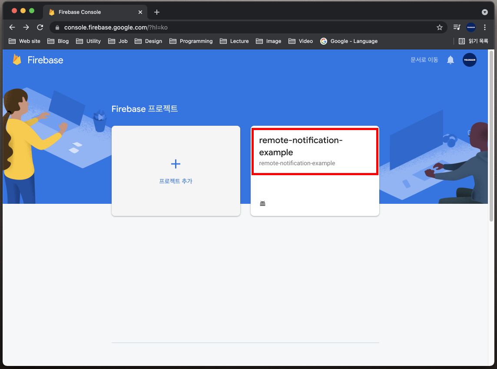

[Android] 알림(Notification) - (5) 원격 알림
원격 알림
구글 파이어베이스의 클라우드 메시징(Cloud Messaging)서비스를 사용하면 원격 알림(Remote Notification)을 구현할 수 있습니다.
1. 파이어베이스 프로젝트 만들기
우선 파이어베이스에 접속하여 로그인합니다. 계정이 없다면 회원가입을 먼저 합니다. 이후 오른쪽 상단의 Go to console을 클릭합니다.Add Project를 클릭하여 파이어베이스 프로젝트를 생성합니다.
프로젝트 이름을 입력하고 계속을 누릅니다.
구글 에널리틱스를 사용할 것인지를 물어봅니다. 이때는 구글 에널리틱스 계정이 필요합니다. 일단 사용하지 않음을 선택하고 프로젝트를 생성합시다.
프로젝트가 정상적으로 생성되면 다음과 같은 화면이 나옵니다.
2. 안드로이드 스튜디오 프로젝트와 파이어베이스 프로젝트 연동
이제 안드로이드 스튜디오 프로젝트에서 Tool > Firebase를 선택합니다.
오른쪽 패널의 Assistant 도구 창에서 Cloud Messaging 항목을 찾습니다. 그리고 Set up Firebase Cloud Messaging을 클릭합니다.
Connect to Firebase를 눌러 안드로이드 스튜디오 프로젝트와 파이어베이스 프로젝트를 연결합니다. 다음과 같은 화면이 나오면 정상적으로 연결된 것입니다.
두 프로젝트가 연결되면 자동으로 google-services.json파일이 생성됩니다. 이 파일은 Firebase에서 안드로이드 프로젝트를 고유하게 식별하는 정보가 담겨있습니다. 프로젝트 도구창을 Android 뷰에서 Project 뷰로 전환합니다.
프로젝트의 app 모듈 아래에서 google-service.json파일을 확인할 수 있습니다.
3. 파이어베이스 라이브러리 추가
이제 파이어베이스 라이브러리를 안드로이드 스튜디오 프로젝트에 추가해야합니다. 다시
오른쪽 패널의 Assistant 도구 창에서 Cloud Messaging 항목을 찾습니다. 그리고 Set up Firebase Cloud Messaging을 클릭합니다.Add FCM to your app을 클릭합니다.
프로젝트에 추가되는 것들은 다음과 같습니다. 우선 프로젝트 수준의 build.gradle에 구글 서비스 라이브러리가 추가됩니다.
1 | buildscript { |
모듈 수준의 build.gradle에는 Firebase 메시징 라이브러리와 구글 서비스 라이브러리 플러그인이 추가됩니다.
1 | plugins { |
4. 알림 보내기
앱을 실제 기기나 에뮬레이터에서 실행합니다. 그리고 홈 버튼을 눌러서 앱이 백그라운드에서 실행되도록 합니다. 앱이 실행 중이지 않거나 백그라운드에 있을 때만 원격 알림을 수신하기 때문입니다.
파이어베이스 콘솔에 접속하여 앞에서 생성한 프로젝트를 선택합니다.

왼쪽 사이드 바 메뉴에서 Cloud Messaging을 선택합니다.Send your first message를 클릭합니다.
다음과 같이 알림 제목과 알림 텍스트를 입력합니다. 알림 이미지와 알림 이름은 선택사항입니다. 오른 쪽에서 어떻게 알림이 나올 지 확인할 수 있습니다. 이후 Next버튼을 누릅니다.
이제 어떤 앱과 어떤 사용자에게 알림을 보낼 지 설정합니다. User segment로 설정하면 앱의 모든 사용자에게 알림이 전송됩니다. 또한 어떤 앱에 알림을 보낼지 앱도 선택하고 Next 버튼을 누릅니다.
알림을 언제 보낼지를 설정할 수 있습니다. Now로 설정하고 Next버튼을 누릅니다.Additional options는 선택사항입니다. 일단 비워두고 Review버튼을 누릅니다.
이제 검토창에서 게시를 누르면 알림이 발송됩니다.
알림을 클릭하면 백그라운드 상태이던 앱이 포그라운드로 실행됩니다.
4. 알림에 데이터 포함시키기
알림을 보낼 때 키-값 형태의 데이터를 추가할 수 있습니다. Additional Option 항목에서 데이터를 추가할 수 있습니다.
앱이 백그라운드에 진입하면 onPause()메소드가 호출됩니다. 알림을 클릭하여 앱이 포그라운드 상태로 변하면 onRestart() > onStart() > onResume()메소드가 순서대로 실행됩니다. 이 메소드 중 한 곳에서 데이터를 읽어올 수 있습니다. 데이터를 전달받아 토스트 메시지로 화면에 출력하겠습니다.
1 | class MainActivity : AppCompatActivity() { |
이제 앱을 실행하고 백그라운드 모드로 변경한 후 알림을 전송합시다. 알림을 클릭하면 다음과 같이 토스트 메시지가 나옵니다.
마치며
이번 포스트에서는 원격 알림(Remote Notification)에 대해 알아봤습니다. 다음 포스트에서는 포그라운드 상태에서 원격 알림을 받는 방법에 대해 알아보겠습니다.